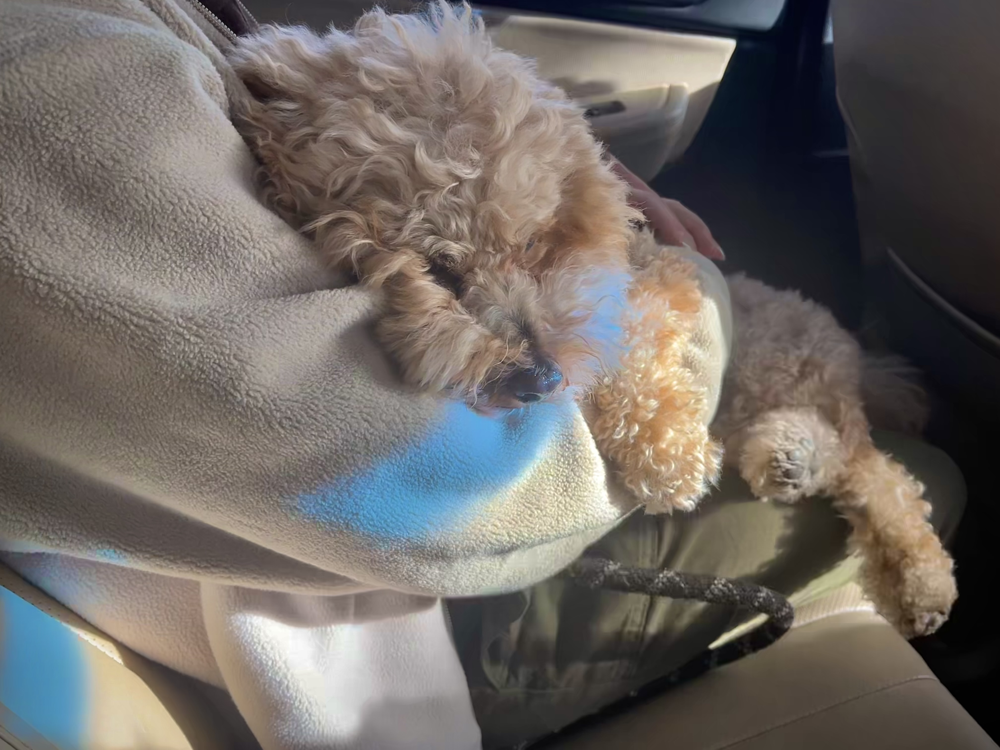

this is my dog on a car ride. he is sitting in my sister's lap

this is a gif of archie when he was sitting on the couch
This is a photo I took on a beautiful walk through San Francisco!
this is my dog on a car ride. he is sitting in my sister's lap
this is a gif of archie when he was sitting on the couch